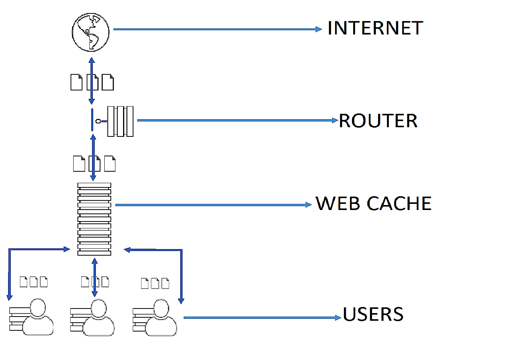

Vinton Gray "Vint" Cerf
Born: 23 June 1943 , New Haven, Connecticut, United States
Internet began in 1969
Tim Berners-Lee
Born: 8 June 1955, London, United Kingdom
World Wide Web began in 1989
Interaction
Collection of Web Resources
Web browsers, Web crawlers, e-mail clients, and other end user tools and applications
origin servers, proxy servers, getaways, tunnels
The client sends an HTTP request message to the server
The server processes the request and replies with an HTTP response message
Servers do not keep informatin about clients in between requests
Web applications effect session tracking using mechanism such as cookies on URL-encoded session information to keep track of related client requests
HTTP Cache is an information technology for the temporary local storage or copy of resource that is fetched from a server.
The GET method is commonly used in HTTP method, It is used to request from the server the retrieval if the source identified by the request URI and can be combine with conditional and/or range request headers to effect conditional and/or partial resource retrieval.
The HEAD Method is identical to GET method, Method will asks for a response but without the response body. This is very useful for retrieving.
The POST method requests that the origin server accept the entity enclosed in the request as a new subordinate of the resource identified by the Request-URI in the Request-Line.
The PUT method requests that the enclosed entity in the message body under the specified request URI.
The TRACE method requests the server to "echo" back to the client of received request and typically used for testing or diagnostics of the request chain.
The DELETE method requests the server to delete the resource identified by the Request-URI.
The CONNECT method is reserved for used of tunneling proxy servers and converts the request connection to a transparent TCP/IP tunnel.
The OPTIONS method returns the HTTP methods what a server can do. It can be used to check the functionality of a web server by requesting.
Message Body (optional)